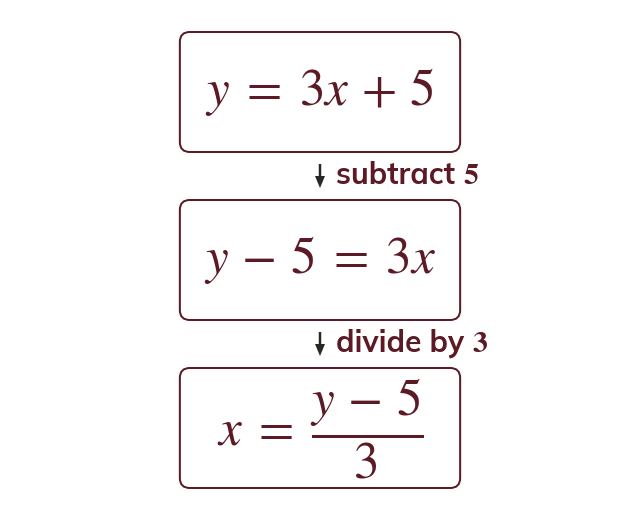
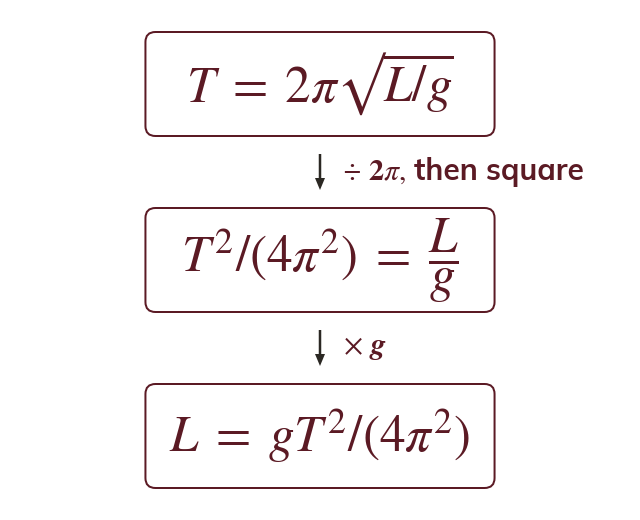
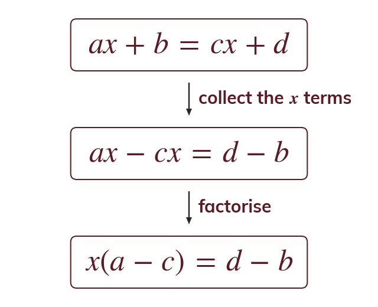
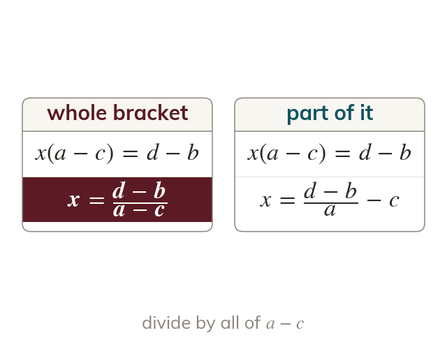

Undo in reverse
Rearranging undoes the operations on the subject in reverse order. It is solving an equation with letters.
A formula is only useful once the letter you need is on its own, and rearranging is just solving an equation with letters instead of numbers - the hard case, where the subject appears twice, is last lesson's factorising put straight to work.
Work down the page at your own pace. Write every answer in your book first, then click to check it.
Read each card, then follow the worked examples one step at a time.

Rearranging undoes the operations on the subject in reverse order. It is solving an equation with letters.

A square root is removed by squaring both sides. A squared subject needs a root at the end.
Pick an answer. If it's wrong, the feedback tells you which mistake it was.
Section Rearranging formulae : familiar formulae rearranged for a given letter, including squares and square roots.
Read each card, then follow the worked examples one step at a time.

When the subject appears twice, its terms are collected on one side. Then the subject is factorised out.

The whole bracket divides the other side. So .
Pick an answer. If it's wrong, the feedback tells you which mistake it was.
Section Rearranging formulae : the formulae where the subject appears twice.
Finished? Next lesson: 2.3 Simplifying Algebraic Fractions.
Log in, then search for a code to practise that skill.